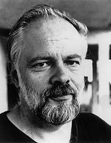

“There is no route out of the maze..."
- Philip K. Dick was born in Chicago in 1928 and lived most of his life in California. He briefly attended the University of California, Berkeley but dropped out before completing any classes.
- In 1952, he began writing professionally and proceeded to write numerous novels and short-story collections.
- He won the Hugo Award for the best novel in 1962 for The Man in the High Castle.
- In 1974he won the John W. Campbell Memorial Award for best novel of the year for Flow My Tears, the Policeman Said.
- In addition to 44 published novels, Dick wrote approximately 121 short stories, most of which appeared in science fiction magazines during his lifetime. Although Dick spent most of his career as a writer in near-poverty, ten of his stories have been adapted into popular films since his death, including Blade Runner, Total Recall, A Scanner Darkly, Minority Report, Paycheck, Next, Screamers, and The Adjustment Bureau. In 2005, Time magazine named Ubik one of the one hundred greatest English-language novels published since 1923. In 2007, Dick became the first science fiction writer to be included in The Library of America series.
“You have to be with people, he thought. In order to
live at all. I mean before they came here I could stand it...
But now it has changed. You can't go back, he thought.
You can't go from people to nonpeople."
― J.R. Isidore ― Philip K. Dick, Do Androids Dream of Electric Sheep?
― J.R. Isidore ― Philip K. Dick, Do Androids Dream of Electric Sheep?